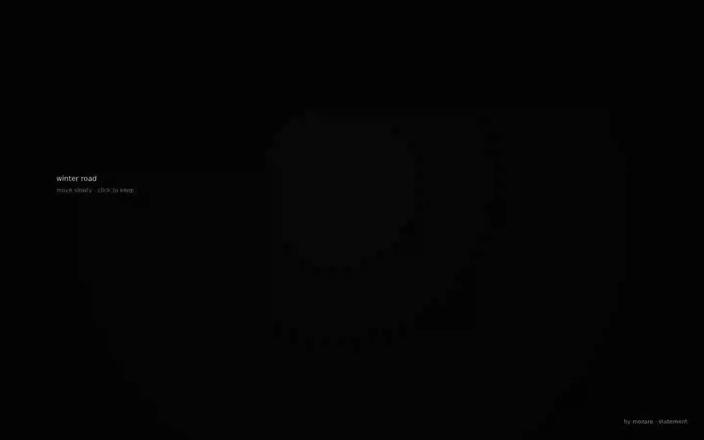
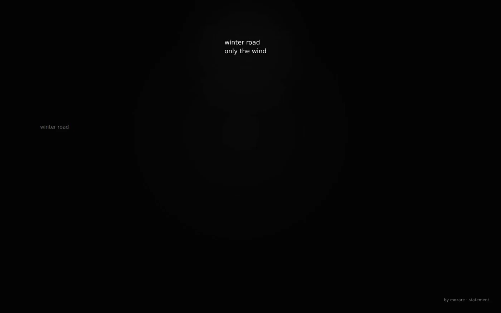

A digital haiga space · by Mozare · 2026
Winter Road
Nine English haiku inhabit a dark field. None is presented as the next item in a sequence. The reader searches by moving and finds that another poem can begin to surface elsewhere.

Primary surfaceRelease v1.0.1
Legibility arrives locally.
A kept poem remains temporary.
SELECTED VIEWS
Three views
Three images hold distinct reading conditions without reducing the work to a single representative screen.

01
Entry
The root phrase appears while the poems remain undisclosed.
02
Discovery
A poem becomes legible by degrees before it can be read in full.

03
Kept relation
One poem remains while another begins to appear elsewhere.
CONTEXT
A haiga space
The nine poems began around two words: winter road. Repeated rewriting moved some words, removed others, and allowed several to return under new grammatical pressure. The result is a family of completed haiku without a single poem serving as the original.
In the browser, the poems coexist without becoming equally available. Darkness gives distance a role, makes discovery local, and lets the field recover after a poem fades.
EDITION AND ACCESS
Work identity
A digital haiga space
Mozare
Mohammad Zare
Release v1.0.1 · source head 316f640
English
Search by proximity; keep by click or tap
Zare, Mohammad. Winter Road: A Haiga Space. Version 1.0.1, 2026.